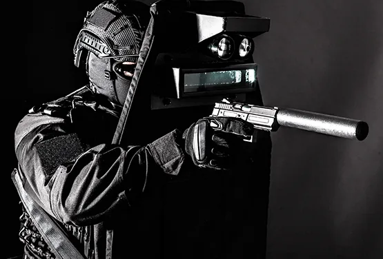

Grupa interwencyjna to ostatnie ogniwo łańcucha, który zaczyna się od czujki w przedpokoju, a kończy na pracowniku ochrony sprawdzającym drzwi tarasowe. Jeśli którekolwiek ogniwo jest słabe, nawet najszybszy patrol przyjedzie za późno albo do niewłaściwego zdarzenia. Poniżej opisujemy cały proces tak, jak wygląda w praktyce w obiektach podłączonych do centrum alarmowego, w domach i firmach w Wejherowie, Redzie, Rumi, Luzinie i Gdyni.
Sekundy 0-30: czujka, centrala i czas na wejście
Wszystko zaczyna się od naruszenia jednej ze stref: otwarcia drzwi (kontaktron), ruchu w pomieszczeniu (czujka PIR lub dualna) albo zbicia szyby. Czujka zgłasza to do centrali alarmowej, czyli „mózgu” systemu zamontowanego zwykle w szafce technicznej lub garderobie.
Centrala nie zawsze reaguje od razu. Strefy wejściowe, np. drzwi frontowe czy wejście z garażu, mają zaprogramowany czas na wejście, najczęściej kilkadziesiąt sekund. To okno, w którym domownik wpisuje kod na klawiaturze albo rozbraja system breloczkiem lub aplikacją. Strefy wewnętrzne, okna i czujki zewnętrzne zwykle wywołują alarm natychmiast.
Gdy alarm zostaje wzbudzony, dzieją się dwie rzeczy jednocześnie: włącza się sygnalizator (syrena z lampą), a moduł komunikacyjny wysyła zdarzenie do centrum monitorowania. Zdarzenie to nie jest ogólne „coś się dzieje”. Zawiera numer obiektu, rodzaj alarmu i strefę, np. „włamanie, strefa 4, okno salonu”.
Którędy idzie sygnał
Nadajnik może korzystać z sieci komórkowej (GPRS/LTE), łącza internetowego (Ethernet) albo radia. Dobre instalacje mają dwie niezależne ścieżki, bo włamywacz, który odetnie kabel od internetu, nie powinien tym samym odciąć obiektu od monitoringu. Centrum regularnie odbiera też sygnały testowe. Jeśli test nie dotrze w ustalonym czasie, operator widzi problem z łącznością, zanim dojdzie do prawdziwego zdarzenia.
Centrum alarmowe: weryfikacja zanim patrol ruszy
Zdarzenie trafia na ekran operatora w centrum alarmowym działającym 24/7. Operator widzi, który obiekt się zgłasza, jakie czujki zadziałały, w jakiej kolejności i czy system był uzbrojony przez właściciela o normalnej porze. Ta wiedza pozwala odróżnić typowe pomyłki od sytuacji, w których liczy się każda minuta.
Standardowa procedura wygląda zwykle tak:
- Operator analizuje zdarzenie: pojedyncza czujka w jednej strefie to coś innego niż kolejne naruszenia w kilku pomieszczeniach.
- Dzwoni do osoby z listy kontaktowej. Rozmówca musi podać hasło ustalone w umowie. Sam głos „to ja, wszystko w porządku” nie wystarcza.
- Jeśli obiekt ma kamery podpięte do centrum, operator może sprawdzić obraz z miejsca zdarzenia.
- Gdy nikt nie odbiera, hasło się nie zgadza albo sytuacja wygląda na realne zagrożenie, operator wysyła grupę interwencyjną.
Są zdarzenia, przy których operator nie traci czasu na telefony. Alarm napadowy (przycisk antynapadowy lub kod przymusu), sabotaż czujki albo seria naruszeń w kolejnych strefach to sygnał do natychmiastowego wyjazdu. Kod przymusu działa zresztą tak, że system rozbraja się normalnie, a w centrum pojawia się cichy alarm, bez syreny, która mogłaby sprowokować napastnika.
Dojazd patrolu: od czego zależy czas
Grupa interwencyjna nie stoi przed każdym domem. Załogi patrolują wyznaczony rejon i jadą tam, skąd przyszło zlecenie. Czas dojazdu zależy od kilku czynników:
- odległości od miejsca, w którym w danej chwili znajduje się najbliższa załoga,
- pory dnia - przejazd przez Redę i Rumię w godzinach szczytu wygląda inaczej niż o trzeciej w nocy,
- dostępu do posesji - zamknięte osiedle, brama na pilota czy brak numeru na ogrodzeniu potrafią zabrać więcej czasu niż sam przejazd,
- jakości danych w karcie obiektu: dokładna lokalizacja, opis wjazdu, punkty orientacyjne.
Dlatego przy podpisywaniu umowy na monitoring domu w Wejherowie czy w okolicznych gminach dobrze jest opisać dojazd tak, jakby miał go szukać ktoś, kto jest tam pierwszy raz w życiu, w nocy i w deszczu.
Na miejscu: co robi grupa interwencyjna
Po przyjeździe pracownicy ochrony nie wbiegają od razu do budynku. Najpierw oceniają sytuację z zewnątrz i obchodzą obiekt dookoła. Sprawdzają:
- czy drzwi, bramy i okna są zamknięte i nieuszkodzone,
- czy są ślady podważania, wybita szyba, przecięte przewody,
- czy w środku widać ruch albo światło, którego nie powinno być,
- czy w okolicy nie kręcą się osoby lub pojazdy, które mogą mieć związek ze zdarzeniem.
Jeśli umowa przewiduje depozyt kluczy, patrol może wejść do środka i sprawdzić pomieszczenia. Bez kluczy działania ograniczają się do terenu, do którego jest dostęp, oraz do obserwacji. Kiedy włamanie jest potwierdzone, patrol zabezpiecza miejsce do przyjazdu Policji i pilnuje, żeby nikt nie zatarł śladów. Uprawnienia pracowników ochrony określa ustawa o ochronie osób i mienia: mogą m.in. ująć osobę stwarzającą zagrożenie i niezwłocznie przekazać ją Policji, ale nie prowadzą dochodzenia za nią.
Po interwencji operator kontaktuje się z właścicielem i przekazuje, co zastano. Zdarzenie trafia do raportu, który przydaje się potem przy zgłoszeniu szkody do ubezpieczyciela.
Fałszywe alarmy i jak je ograniczyć
Większość wyjazdów nie kończy się złapaniem włamywacza. Przyczyny są zwykle prozaiczne:
- kot lub pies w zasięgu czujki, która nie jest odporna na zwierzęta,
- uchylone okno i firanka poruszana przeciągiem,
- balon z urodzin, który dryfuje po salonie,
- domownik, który wrócił wcześniej i nie zdążył wpisać kodu,
- czujka skierowana na grzejnik lub okno nasłonecznione po południu.
Każdy z tych problemów da się rozwiązać przy projektowaniu systemu albo przeglądzie. Więcej o doborze czujek do domu ze zwierzętami piszemy w artykule alarm do domu: czujki, kamery czy monitoring 24/7. Fałszywe alarmy to nie tylko niepotrzebny wyjazd. Obiekt, z którego co tydzień przychodzi zgłoszenie bez powodu, męczy domowników i usypia czujność wszystkich zaangażowanych.
Co przygotować, podpisując umowę z grupą interwencyjną
Skuteczność reakcji w dużej mierze zależy od informacji, które klient przekazuje na starcie. Przed podpisaniem umowy przygotuj:
- listę 2-3 osób kontaktowych z numerami, które faktycznie odbierają, także w nocy,
- hasło do weryfikacji telefonicznej, inne niż kod do alarmu,
- decyzję, czy zostawiasz klucze w depozycie,
- opis dojazdu, kod do bramy osiedlowej, informację o psie na posesji,
- listę stref z opisem pomieszczeń, żeby operator wiedział, że „strefa 4” to salon od strony ogrodu.
Firma ochrony musi mieć koncesję MSWiA na usługi ochrony osób i mienia. SUFO Security działa na podstawie koncesji nr L-0299/14 i prowadzi centrum alarmowe pracujące całą dobę.
Najczęstsze pytania
Czy grupa interwencyjna wejdzie do domu pod moją nieobecność?
Tylko wtedy, gdy umowa przewiduje depozyt kluczy albo inny uzgodniony sposób wejścia. Bez tego patrol sprawdza obiekt z zewnątrz, a przy śladach włamania zabezpiecza miejsce i wzywa Policję.
Co się stanie, jeśli sam przez pomyłkę uruchomię alarm?
Operator zadzwoni na numer z listy kontaktowej. Wystarczy odebrać i podać hasło. Jeśli rozbroisz system i potwierdzisz pomyłkę, patrol nie musi wyjeżdżać. Gdy nie odbierzesz, grupa pojedzie sprawdzić obiekt.
Czy grupa interwencyjna działa w nocy, w weekendy i święta?
Tak. Centrum alarmowe SUFO Security pracuje 24/7, a sygnały z obiektów są obsługiwane niezależnie od pory dnia i kalendarza.
Czy mogę podłączyć do monitoringu alarm, który już mam?
W wielu przypadkach tak, jeśli centrala pozwala na dołożenie nadajnika lub ma moduł komunikacyjny. Trzeba to sprawdzić na miejscu, razem ze stanem czujek i akumulatora.
Sprawdź, jak to wygląda w Twojej okolicy
Chcesz wiedzieć, jak zorganizowana byłaby ochrona Twojego domu lub firmy w Wejherowie, Redzie, Rumi, Luzinie, Gdyni albo innej miejscowości powiatu wejherowskiego? Zadzwoń pod numer czynny całą dobę: 602 196 006, albo do biura: 58 672 48 19. Orientacyjny czas dojazdu dla swojego adresu sprawdzisz też na stronie głównej.